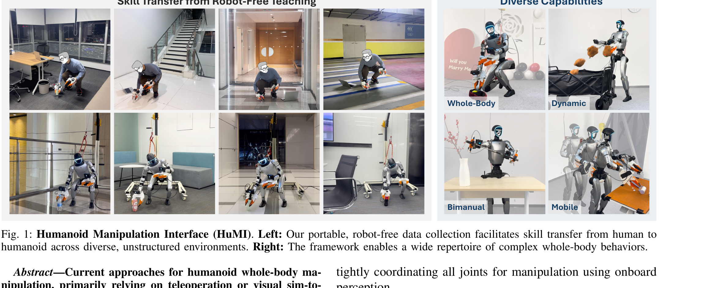
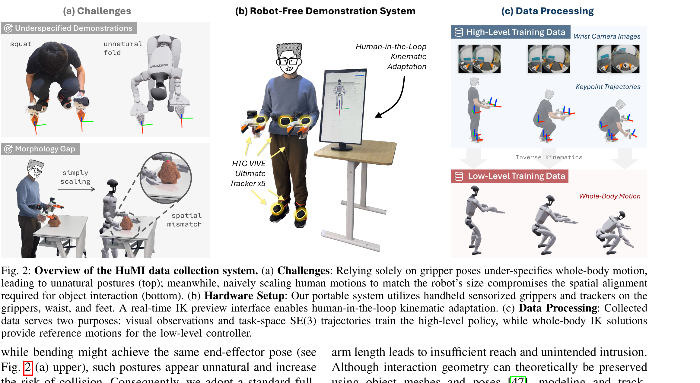
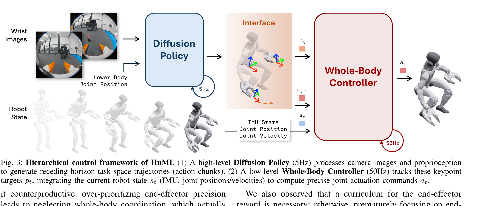
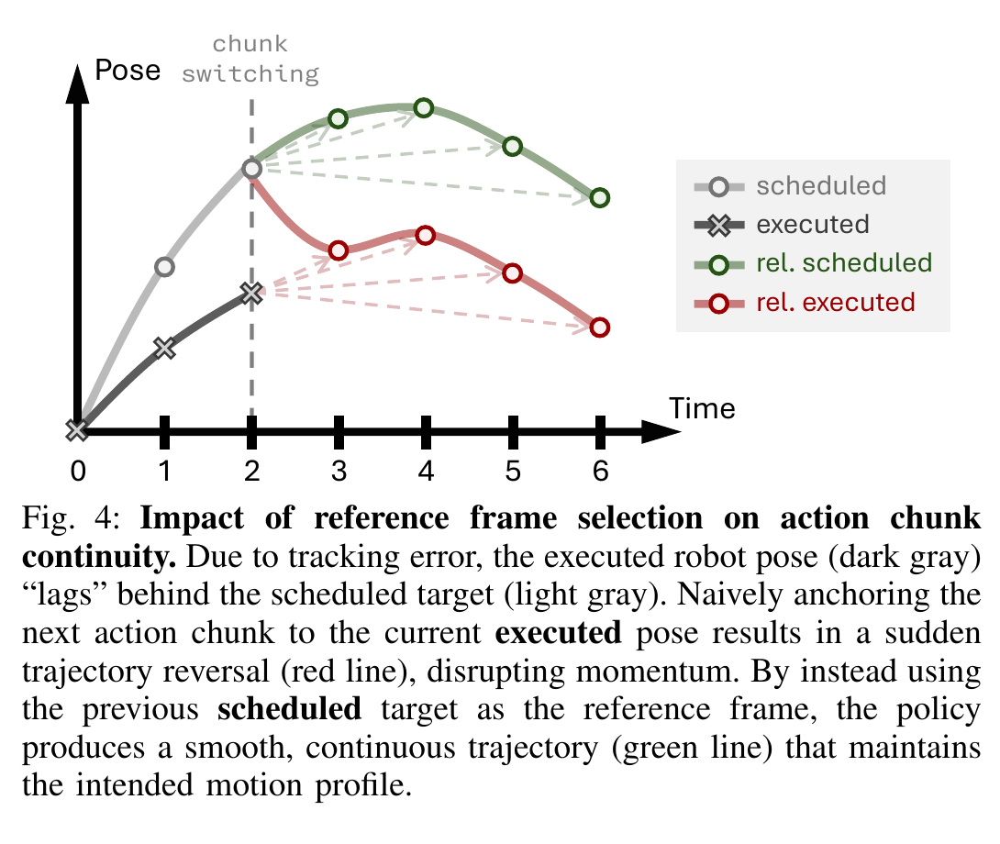

Humanoid Manipulation Interface: Humanoid Whole-Body Manipulation from Robot-Free Demonstrations
一句话看懂：不用真机器人采演示，但最终仍让真机器人做全身操作
这篇论文真正要省掉的是“采集演示时必须占用并操纵真机器人”。人背着五个追踪器、拿着两个带相机的夹爪，在真实场景里亲自完成任务；系统把人的手、骨盆和脚轨迹转成机器人可学的数据。难点不只是 retarget：人和机器人形态不同、低层控制一定有误差，而且高层策略每 2 秒左右换一次 action chunk。HuMI 的关键贡献，是把采集、可行性、精度、分层接口一起补齐。

| 输入 | 双腕相机图像；左右手、骨盆、双脚的 SE(3) 轨迹；夹爪开合。 |
| 高层 | 5 Hz Diffusion Policy：从腕部图像与下肢本体状态预测未来关键点 action chunk。 |
| 低层 | 50 Hz whole-body RL controller：结合 IMU、关节位置/速度，把关键点目标变成关节命令。 |
| 结果 | 五类任务；数据采集吞吐约为 TWIST2 遥操作的 3 倍；未见环境与物体上达到 70% 成功率。 |
Robot-Free 到底“free”了什么？
上一节说“采演示时不用机器人”，但这很容易被误解成“训练也完全不用机器人/仿真”。不是。Robot-free 修饰的是 demonstration collection：采集者不远程操控实体机器人，也不需要实体机器人在现场；后续仍要使用机器人模型做 IK、在仿真里训练低层 RL，并在真机上部署和评测。
它免掉了 ✓
采集时占用真机；搬运机器人到每个场景；遥操作时实时维持平衡；操作者手工补偿低层控制误差。
它没有免掉 ✗
机器人 URDF/运动学；在线 IK 预览里的虚拟机器人；低层 sim-to-real RL；最终真机执行与评测。

展开原文 · robot-free 的严格定义
“This design enables task teaching without the physical presence of a robot.”
两层策略：一个想“往哪走”，一个负责“真的走到”
上一节解决了人类演示怎么变得“机器人可行”，但 IK 轨迹不等于真机能精确播放。HuMI 因此拆成两层：高层只在任务空间规划关键点，低层高速闭环维持全身稳定。这个分层也制造了下一节的核心矛盾：高层计划的 pose 与低层真正执行到的 pose 不会完全一致。

“训测不一致”为什么反而效果更好？
更准确地说，这不是“作者故意让整个训练分布和测试分布不同”。部署时的确出现了训练中没有的计划—执行偏差；作者的反直觉选择是：在 chunk 切换时，不用最新的真实执行位姿重置计划，而继续用上一段的计划目标作为参考系。它牺牲了“新 chunk 起点和当前真机状态完全对齐”，换来了“高层时间轨迹连续”，再把剩余误差交给低层闭环控制器消化。
| 高层训练时 | 模仿人类轨迹，默认给出的关键点目标会被完美执行；它没有见过 4–6 cm 的真机跟踪滞后。 |
| 低层训练时 | 追踪固定的离线 reference motion；它擅长从当前状态追赶一条连续目标轨迹。 |
| 真机测试时 | 执行位姿落后于计划位姿。若下一 chunk 锚到真实位姿，相当于高层突然把目标轨迹向后平移，甚至先反向再前进。 |
| 作者选择 | 锚到上一 chunk 的 scheduled target，让计划轨迹连续；低层看到的是“继续追赶”，而不是“目标突然倒车”。 |
控制接口不只要描述当前在哪里，还要保存原本想怎么运动。动态抛掷中，真实执行状态虽然最准确，却已经落后；用它重建下一段相对轨迹，会把“纠正误差”错误地写进高层目标，破坏速度和动量。scheduled pose 则保留了原动作的相位与意图。
展开原文 · 为什么 scheduled reference 更贴合训练
“This aligns better with the training dynamics of both levels: the high-level policy acts under the assumption of perfect tracking, while the low-level RL controller is trained to track fixed offline reference motions.”
Fig. 4 逐点拆解：红线为什么会“倒车”，绿线为什么顺
上一节给出结论，这一节把图中的四条线和 $t=2$ 切换点走一遍。读图时要把两组概念分开：scheduled / executed 是系统过去实际发生的计划与执行；rel. scheduled / rel. executed 是选择不同参考系后，下一 action chunk 被放到全局坐标里形成的两种未来目标。

1. 高层先画出浅灰计划
它预计 t=2 到达浅灰圆点。
输入是什么：当前任务提供的原始观测、指令、机器人状态或训练数据。先明确这些输入，才能判断后面的结论是否用了部署时拿不到的信息。
这一步究竟做什么：本步骤执行“高层先画出浅灰计划”。具体来说，它预计 t=2 到达浅灰圆点。 这里处理的只是整条链路中的一个接口：把上一步的结果整理成下一步能够正确读取和继续计算的形式。
输出到哪里：经过本步骤处理、含义更明确的中间结果。这个结果会交给下一步“真机实际落后”继续处理。
为什么不能省略：它把未经处理的原始问题变成后续模块可以计算的输入，是整条链路的起点。
2. 真机实际落后
低层努力追踪，但在 t=2 只到达深灰叉号；误差不是零。
输入是什么：来自上一步“高层先画出浅灰计划”的产物：经过本步骤处理、含义更明确的中间结果。本步骤还会按论文设置读取当前条件、时间步或训练信号。
这一步究竟做什么：本步骤执行“真机实际落后”。具体来说，低层努力追踪，但在 t=2 只到达深灰叉号；误差不是零。 这里处理的只是整条链路中的一个接口：把上一步的结果整理成下一步能够正确读取和继续计算的形式。
输出到哪里：经过本步骤处理、含义更明确的中间结果。这个结果会交给下一步“新 action chunk 到来”继续处理。
为什么不能省略：它承担上下两步之间的接口；缺少它，前一步产生的信息无法以正确格式或正确含义传到下一步。
3. 新 action chunk 到来
新 chunk 是相对位移序列，必须选一个参考原点放回世界坐标。
输入是什么：来自上一步“真机实际落后”的产物：经过本步骤处理、含义更明确的中间结果。本步骤还会按论文设置读取当前条件、时间步或训练信号。
这一步究竟做什么：本步骤执行“新 action chunk 到来”。具体来说，新 chunk 是相对位移序列，必须选一个参考原点放回世界坐标。 这里处理的只是整条链路中的一个接口：把上一步的结果整理成下一步能够正确读取和继续计算的形式。
输出到哪里：经过本步骤处理、含义更明确的中间结果。这个结果会交给下一步“朴素做法：锚到 actual”继续处理。
为什么不能省略：它承担上下两步之间的接口；缺少它，前一步产生的信息无法以正确格式或正确含义传到下一步。
4. 朴素做法：锚到 actual
原点被拉到落后位置，下一目标比浅灰计划还低，于是目标先“倒车”。
输入是什么：来自上一步“新 action chunk 到来”的产物：经过本步骤处理、含义更明确的中间结果。本步骤还会按论文设置读取当前条件、时间步或训练信号。
这一步究竟做什么：本步骤执行“朴素做法：锚到 actual”。具体来说，原点被拉到落后位置，下一目标比浅灰计划还低，于是目标先“倒车”。 这里处理的只是整条链路中的一个接口：把上一步的结果整理成下一步能够正确读取和继续计算的形式。
输出到哪里：经过本步骤处理、含义更明确的中间结果。这个结果会交给下一步“HuMI：锚到 scheduled”继续处理。
为什么不能省略：它承担上下两步之间的接口；缺少它，前一步产生的信息无法以正确格式或正确含义传到下一步。
5. HuMI：锚到 scheduled
新 chunk 从旧计划终点自然接上，保持目标速度和动作相位连续。
输入是什么：来自上一步“朴素做法：锚到 actual”的产物：经过本步骤处理、含义更明确的中间结果。本步骤还会按论文设置读取当前条件、时间步或训练信号。
这一步究竟做什么：本步骤执行“HuMI：锚到 scheduled”。具体来说，新 chunk 从旧计划终点自然接上，保持目标速度和动作相位连续。 这个动作会真正改变环境，所以系统还要读取执行后的新观测，检查模型预期与现实之间的差距。
输出到哪里：经过本步骤处理、含义更明确的中间结果。这个结果会交给下一步“误差交给低层闭环”继续处理。
为什么不能省略：它承担上下两步之间的接口；缺少它，前一步产生的信息无法以正确格式或正确含义传到下一步。
6. 误差交给低层闭环
低层仍读取真实状态并追赶连续绿色目标；HuMI 没有假装误差不存在，只是不让误差污染高层轨迹。
输入是什么：来自上一步“HuMI：锚到 scheduled”的产物：经过本步骤处理、含义更明确的中间结果。本步骤还会按论文设置读取当前条件、时间步或训练信号。
这一步究竟做什么：低层仍读取真实状态并追赶连续绿色目标；HuMI 没有假装误差不存在，只是不让误差污染高层轨迹。
输出到哪里：经过本步骤处理、含义更明确的中间结果。这是图中这条链路的最终产物，随后会进入真实执行、模型更新或指标评测。
为什么不能省略：机器人动作会改变下一次观测；只有执行后重新读取现实，才能发现预测误差并阻止错误连续累积。
实验支持什么，又没有直接证明什么？
Fig. 4 解释了机制，实验则用不同任务的消融验证各个接口部件。要注意：论文没有给 Fig. 4 两种 reference 的统一总表，而是在对应动态任务中报告失败现象；因此“训测不一致效果更好”应理解为这一接口设计在 HuMI 分层系统中更稳，不能外推成“所有机器学习任务故意制造 train-test mismatch 都会更好”。
| 完整 HuMI | 跪地求婚 17/20 = 85%；双手拔剑 17/20 = 85%；抛玩具 16/20 = 80%；走到桌边清洁 15/20 = 75%。 |
| 用 actual EE pose 作参考 | 抛掷中动作块切换会破坏连续性，典型失败是机器人突然向后跳并撞到后方障碍（Fig. 6b）。 |
| 去掉人在环 IK | 求婚任务由 85% 降到 1/10 = 10%，说明 robot-free 并不等于忽略 embodiment gap。 |
| 只给 EE、不指定全身 | 求婚任务降到 0/10；两个手的轨迹不足以唯一决定腿和躯干如何配合。 |
| 去掉变速增强 | 拔剑由 85% 降到 5/10 = 50%，平均末端误差升至 21.2 mm。 |
| 泛化 | 350 条、7 个环境的瓶子拾取数据；未见环境和物体组合上成功率 70%。 |
Robot-free：省掉采集时的实体机器人，不省机器人约束。
Fig. 4：actual pose 更真实，但 scheduled pose 更能保持动作意图连续。
核心分工：高层守住连续计划，低层根据真实状态负责追赶和稳定。
展开原文 · 论文对红线与绿线的解释
“Resetting the reference to the lagging executed pose generates a trajectory that suffers from a sudden reversal… To enforce continuity, we instead utilize the previous target pose as the action reference.”